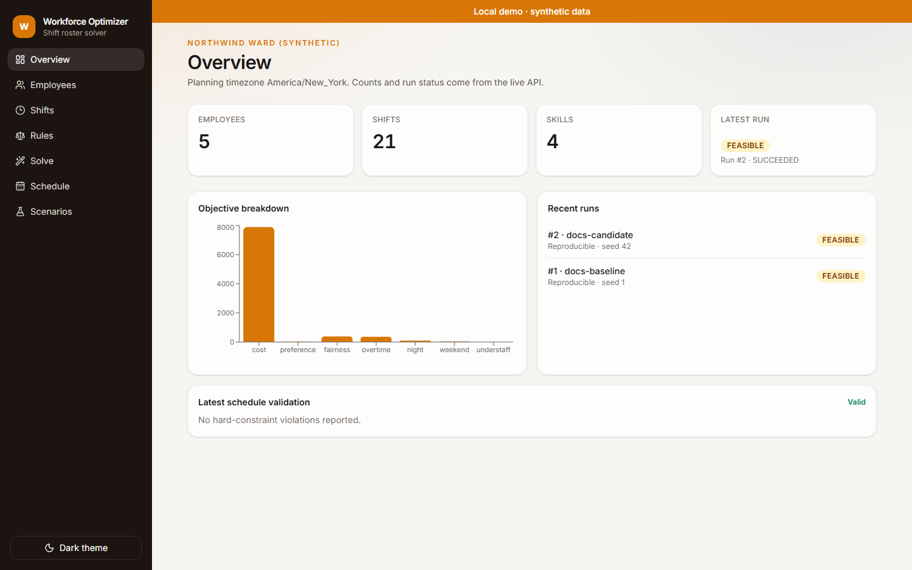
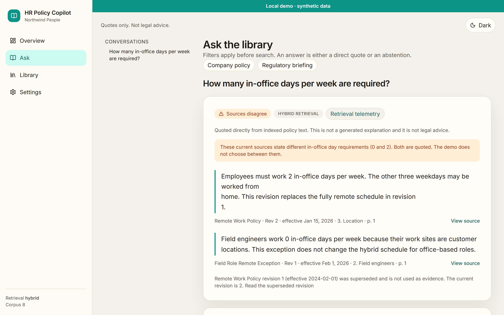

TWO PROJECTS / ONE CLOSER LOOK
See the work.
Follow the evidence.
A closer look at two tools for difficult HR workflows: building a roster and finding policy evidence.
THE IDEA
Engineering decisions,
made visible.
Inspect the interfaces, then follow the project sources for the implementation, tests and limitations. These captures show particular demo states, not a guarantee of future results.
01 / WORKFORCE OPTIMIZER
A schedule is only
part of the story.
Explore a synthetic ward scheduling workflow, from scenario selection to a roster and its validation summary.
View project source ↗EXPLORE THE FLOW
Watch recorded GIF ↗


What to look for The separate validator checks hard rules and the scorer reconciles the objective before a feasible schedule is stored.
Limit Validation does not prove optimality; an infeasible result describes the configured model, not a legal judgment. Algorithm notes ↗
02 / HR POLICY COPILOT
Answers are useful.
Sources matter.
Follow a recorded question through an answer, its sources and an abstention in a synthetic policy library.
View project source ↗EXPLORE THE FLOW
Watch recorded GIF ↗


What to look for The application retrieves passages, exposes citations and can abstain when its evidence gate is not met.
Limit The gate uses heuristic thresholds; conflict detection is limited to the demo’s office-day claims. Evaluation uses a small synthetic corpus. Evaluation details ↗
GO DEEPER
Look beyond
the screenshots.
Captures show the interface, not the full behavior of either system. The project documentation explains how to run each application and examine its tests and evidence.
Workforce Optimizer repository ↗HR Policy Copilot repository ↗